Learn it
The four HSC topics
NOW
TOPIC 1
Operations
Term 4 2026
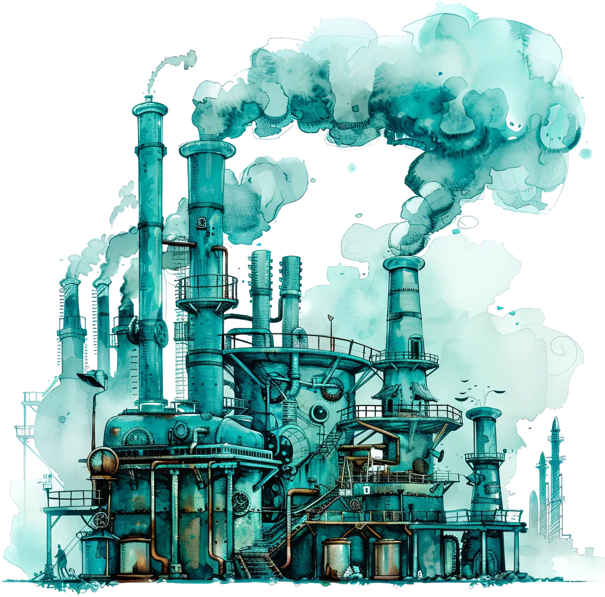
SOON
TOPIC 2
Marketing
Term 1 2027
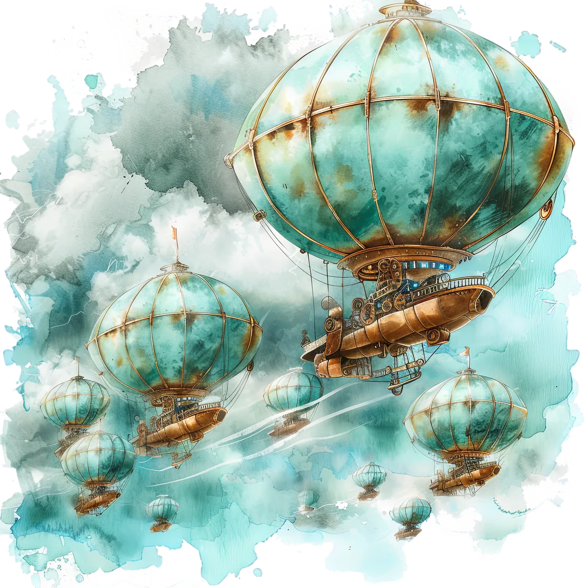
SOON
TOPIC 3
Finance
Terms 1-2 2027
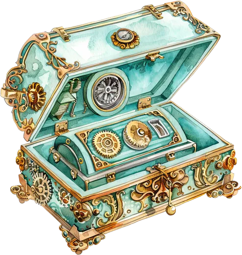
SOON
TOPIC 4
Human Resources
Terms 2-3 2027
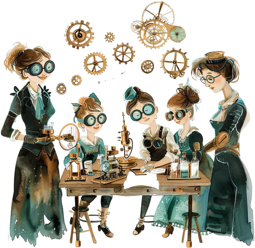
Practise it
Revision that runs all yearSOON
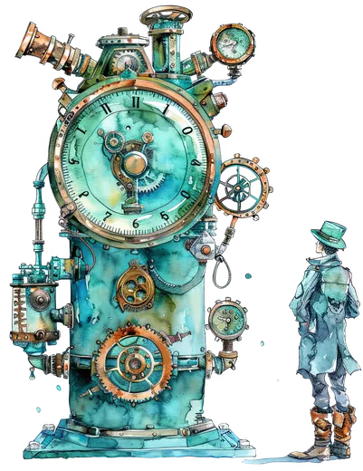
Weekly PracticeYour homework set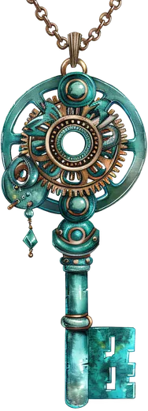
FlashcardsMaster a set, earn a code LeaderboardWho has mastered the most setsSOONGamesSyllabus games
SOON
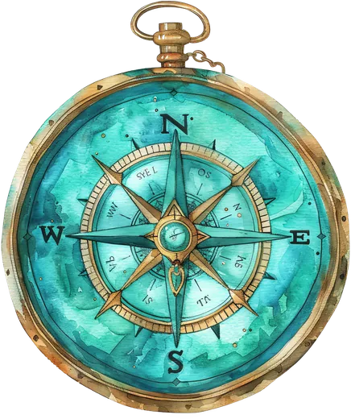
Quizzes and FormsMultiple choice, scored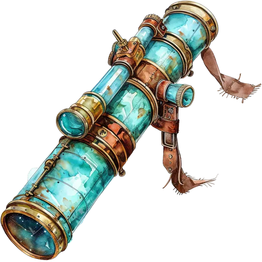
Verb LabWhat each verb wants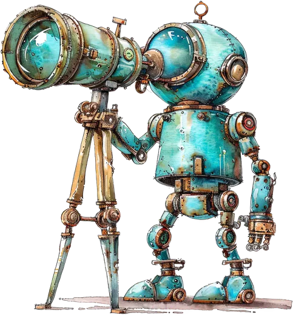
Practice Cards31 Operations questionsSOON
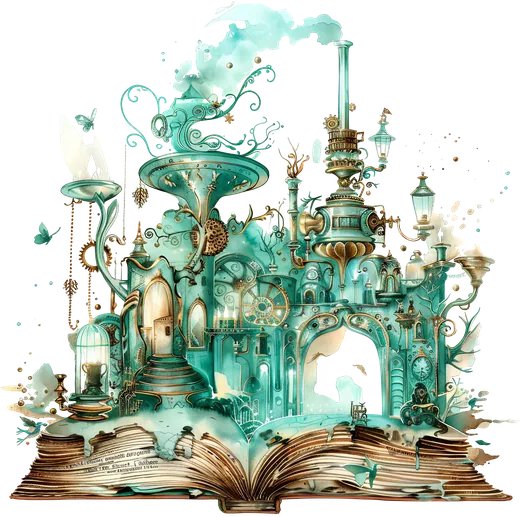
Past HSCQuestions by topicExplore it
Real business, real examples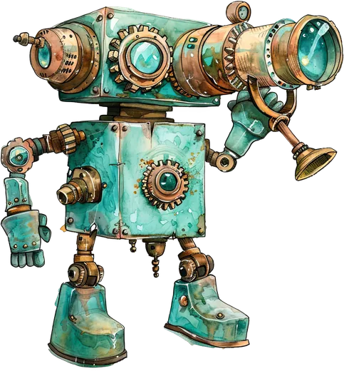
WatchOperations playlist, 28 videosSOON
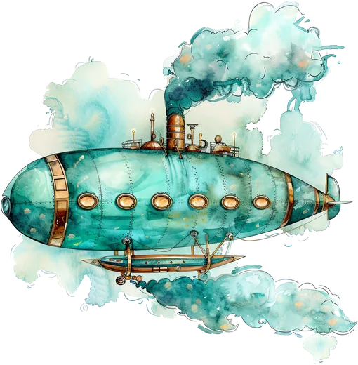
Business NewsLive feeds from trusted sitesSOON
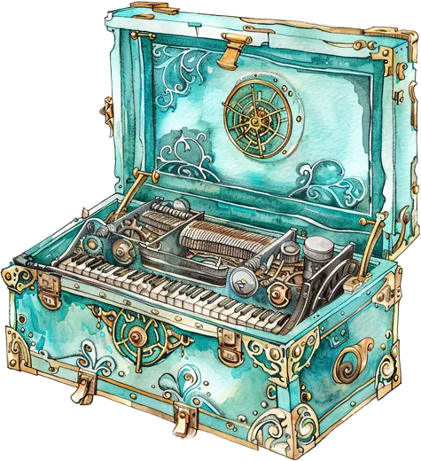
Case StudiesFilter by topic and dot point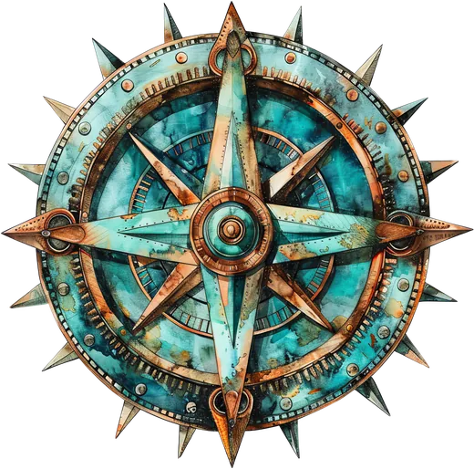
Dot Point FinderOperations dot points are upGet ready for the HSC
Study tips and HSC tools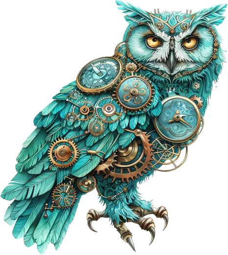
HSC Business Study TipsWhat matters most in Business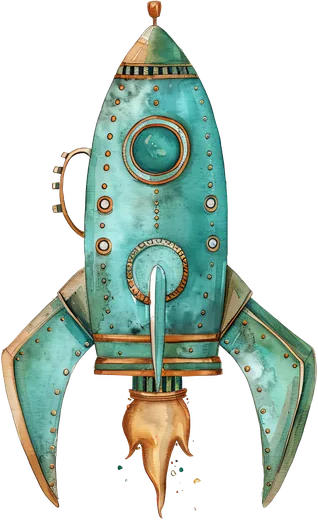
Start HereOverview and syllabus, on iLearn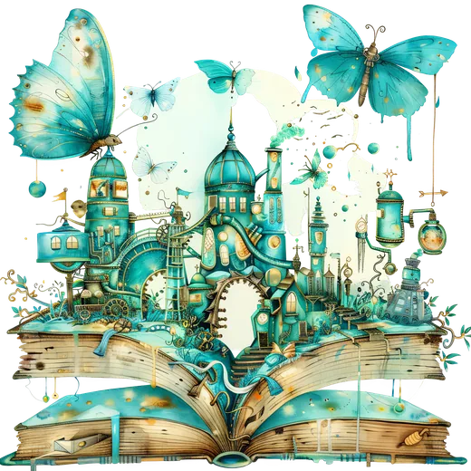
TextbooksChapter PDFs, on iLearn Practice QuestionsHSC style, on iLearn Case StudiesReal businesses, on iLearnSOON
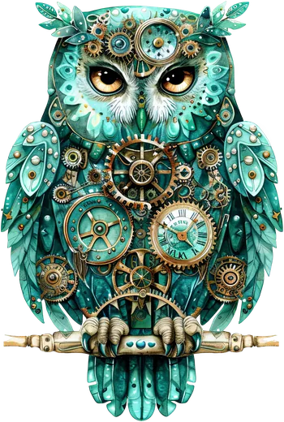
Exam SkillsScaffolds and structureSOON Model AnswersNESA band samples
Model AnswersNESA band samples
Model AnswersNESA band samplesSOONSyllabus RecallTest yourself